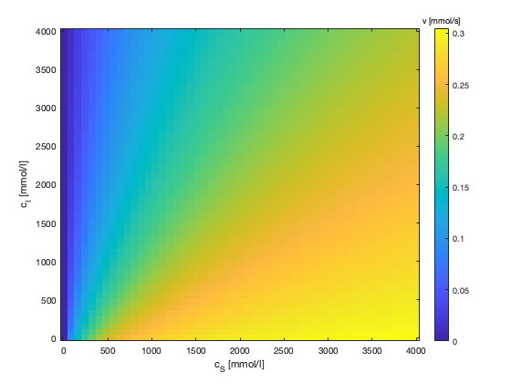
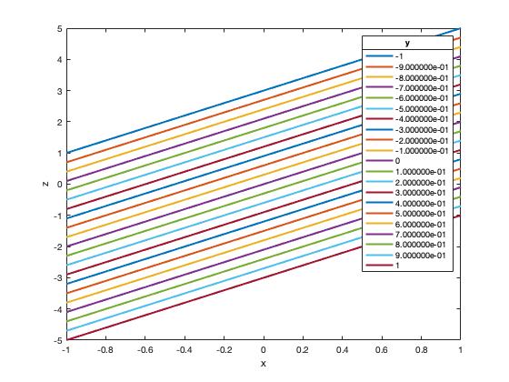

Contents
close all
v_max=0.32;
KM= 200;
KI=500;
cS=linspace(0,4000,51);
cI=linspace(0,4000,51);
[cSgrid, cIgrid]=meshgrid(cS,cI);
v = v_max * cSgrid ./ (KM*(1+cIgrid/KI)+cSgrid);
N_par = 10;
figure('Name', 'Graphenschar mit Parameter c_I')
plot(cS, v(1:N_par:end,:), 'LineWidth', 2)
xlabel('c_S [mmol/l]')
ylabel('v [mmol/s]')
par_labels = compose('%d',cI(1:10:end));
leg = legend(par_labels);
title(leg, 'c_I [mmol/l]')
figure('Name', 'Graphenschar mit Parameter c_S')
plot(cI, v(:,1:10:end),'LineWidth', 2)
xlabel('c_I [mmol/l]')
ylabel('v [mmol/s]')
par_labels = compose('%d',cS(1:10:end));
leg = legend(par_labels);
title(leg, 'c_S [mmol/l]')
figure('Name', 'Surface plot')
surf(cSgrid, cIgrid, v, 'EdgeColor', 'None')
xlabel('c_S [mmol/l]')
ylabel('c_I [mmol/l]')
zlabel('v [mmol/s]')
cb = colorbar();
title(cb,'v [mmol/s]')
grid off
hold on
plot3(cSgrid(:,1:N_par:end), ...
cIgrid(:,1:N_par:end), ...
v(:,1:N_par:end), 'k-', 'LineWidth', 2);
plot3(cSgrid(1:N_par:end,:)', ...
cIgrid(1:N_par:end,:)', ...
v(1:N_par:end,:)', 'k-', 'LineWidth', 2);
hold off
figure('Name', 'Heat map')
imagesc(cI, cS, v)
set(gca,'YDir','normal');
cb = colorbar();
title(cb,'v [mmol/s]')
xlabel('c_S [mmol/l]')
ylabel('c_I [mmol/l]')
figure('Name', 'Colored contour plot')
levels = linspace(0,v_max,17);
contourf(cI, cS, v, levels)
cb = colorbar();
title(cb,'v [mmol/s]')
xlabel('c_S [mmol/l]')
ylabel('c_I [mmol/l]')
figure('Name', 'Labeled contour plot')
contour(cI, cS, v, levels, 'ShowText','on')
xlabel('c_S [mmol/l]')
ylabel('c_I [mmol/l]')
figure('Name', '3d contour plot')
contour3(cI, cS, v, levels, 'ShowText','on', 'Linewidth',2)
hold on
surf(cSgrid, cIgrid, v, 'EdgeColor', 'None','FaceAlpha',0.5)
xlabel('c_S [mmol/l]')
ylabel('c_I [mmol/l]')
zlabel('v [mmol/s]')
cb = colorbar();
title(cb,'v [mmol/s]')
grid off

Weiteres Beispiel: Gauss-Glocke 2D
weitere_Beispiele(@Gauss)
Weiteres Beispiel: Kugelfunktion
weitere_Beispiele(@Kugel)
Weiteres Beispiel: Lineare Funktion in 2D
weitere_Beispiele(@LinFun)

Hilfsfunktionen
function z=Kugel(x,y)
z = sqrt(1-(x.^2+y.^2));
z(x.^2+y.^2>1)=NaN;
end
function z=Gauss(x,y)
z = exp(-(x.^2+y.^2)/2/.2);
end
function z=LinFun(x,y)
z = 2*x - 3*y;
end
function weitere_Beispiele(function_handle)
x = linspace(-1, 1, 1001);
y = linspace(-1, 1, 1001);
[xGrid, yGrid] = meshgrid(x,y);
zGrid = function_handle(xGrid, yGrid);
figure('Name', 'Graphenschar mit Parameter y')
plot(x, zGrid(1:50:end,:)','LineWidth', 2)
xlabel('x')
ylabel('z')
par_labels = compose('%d',y(1:50:end));
leg = legend(par_labels);
title(leg, 'y')
figure('Name', 'Surface plot')
surf(xGrid, yGrid, zGrid, 'EdgeColor', 'None')
xlabel('x')
ylabel('y')
zlabel('z')
cb = colorbar();
title(cb,'z')
figure('Name', 'Colored contour plot')
contourf(xGrid, yGrid, zGrid)
cb = colorbar();
xlabel('x')
ylabel('y')
figure('Name', 'Labeled contour plot')
contour(xGrid, yGrid, zGrid, 'ShowText','on')
xlabel('x')
ylabel('y')
end